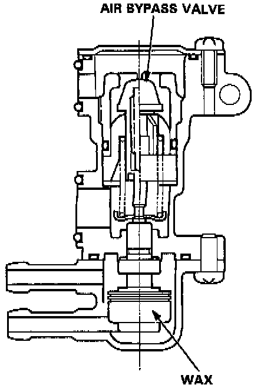

Auxiliary Air Valve (Idle Speed): Description and Operation
PURPOSE/OPERATION
To prevent erratic running when the engine is warming up, it is necessary to raise the idle speed. The fast idle thermo valve is controlled by a thermowax plunger. When the engine is cold, the engine coolant surrounding the thermowax contracts the plunger, allowing additional air to be bypassed into the intake manifold so that the engine idles faster. When the engine reaches operating temperature, the valve closes, reducing the amount of air by passing into the manifold.